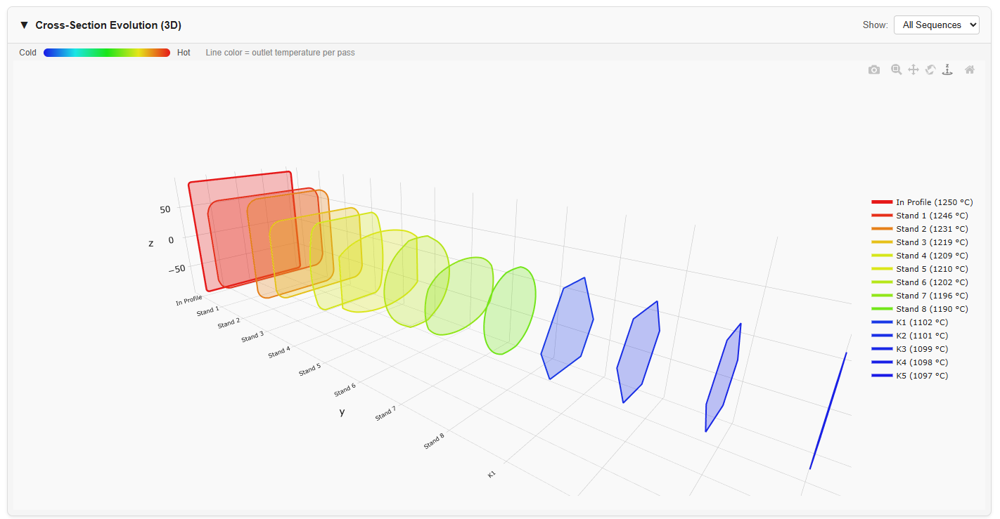
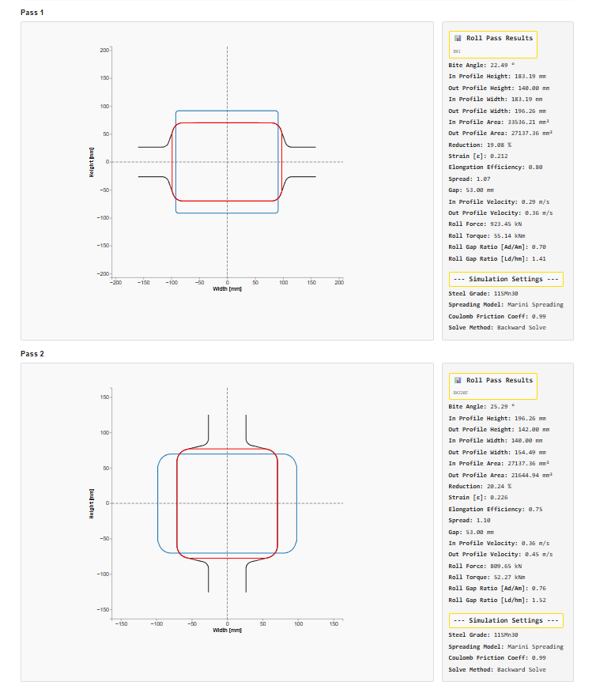
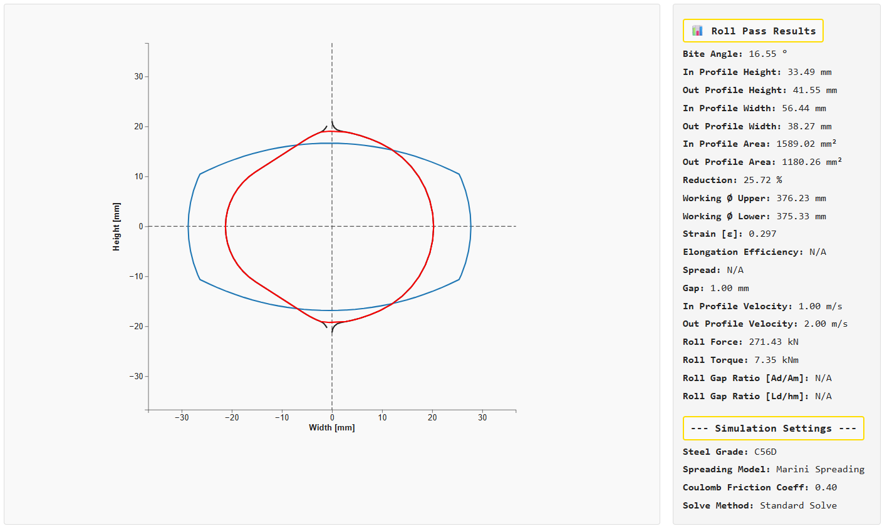
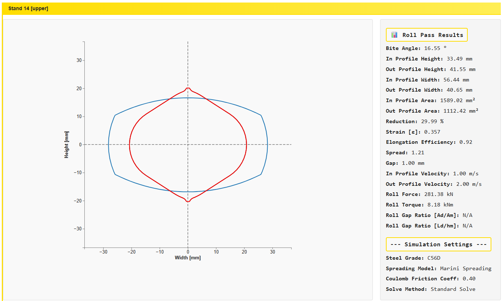
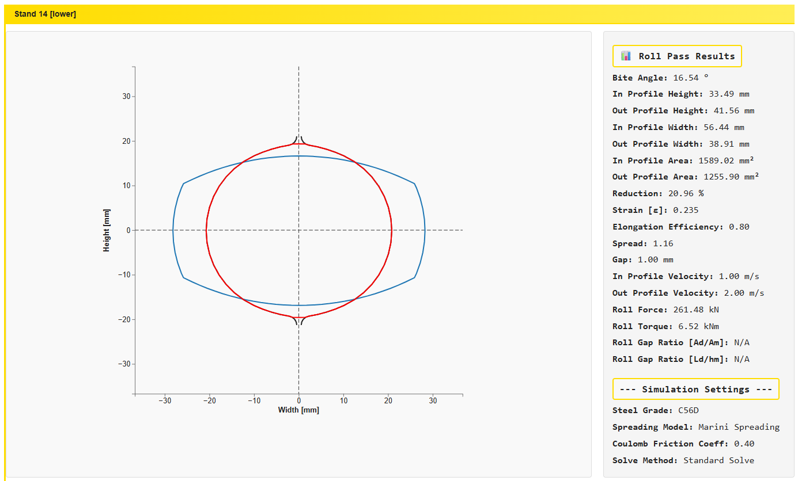
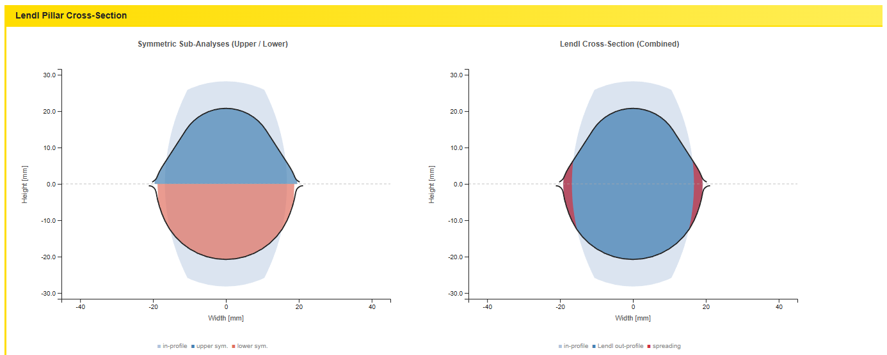
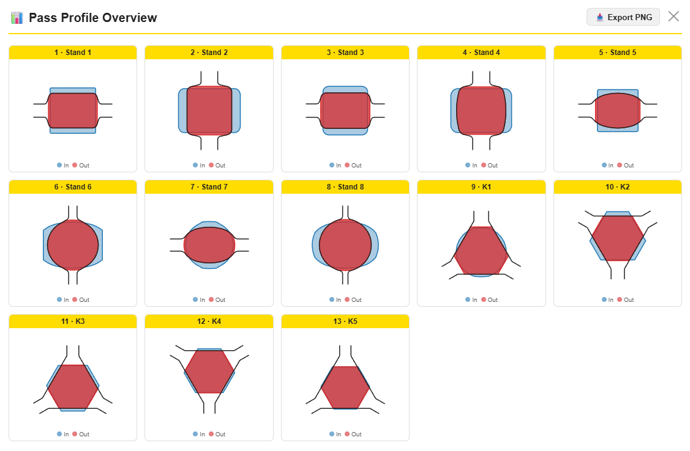
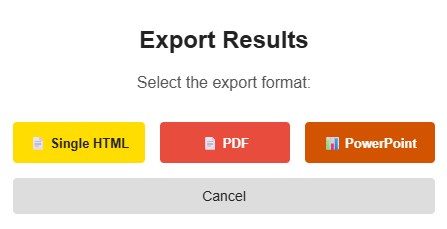

PyRoll GUI | Date: June 2026
The Overall Plots tab gives a complete, sequence-level view of the simulation results. While the Pass Plots tab focuses on one pass at a time, the Overall Plots tab displays all passes simultaneously — making it the primary place to evaluate the overall forming behaviour, cross-section evolution, and consistency across the entire rolling sequence.
The tab combines three complementary views:
At the top of the tab, a Simulation Configuration panel summarises the key parameters used during the simulation run. These values are shown for traceability and are read-only in this tab.

| Field | Description |
|---|---|
| Steel Grade | Material selected in the In-Profile tab. Determines the flow stress model and temperature-dependent material properties used throughout the sequence. |
| Spreading Model | The spreading model applied to all passes (e.g. Marini Spreading, Wusatowski). |
| Coulomb Friction Coefficient | The friction coefficient used for roll force and torque calculations in every pass. |
| Solve Method | Forward Solve — calculates out-profile from a given gap. Backward Solve — determines the gap from a target out-profile height. |
The Cross-Section Evolution (3D) chart is an interactive 3D visualisation that stacks all out-profiles of the rolling sequence along the rolling direction (y-axis), creating a three-dimensional picture of how the workpiece cross-section changes from pass to pass.

Each profile slice in the chart corresponds to one pass. The colour of each slice encodes the outlet temperature of that pass:
A colour bar at the top left (Cold ↔ Hot) provides the reference scale. The legend on the right lists every pass by name together with its outlet temperature in °C. The first entry in the legend is In Profile — the initial billet cross-section before any rolling.
In the top-right corner of the plot area, a Show dropdown allows filtering which rolling sequences are displayed:
The 3D plot is fully interactive. A toolbar in the top-right corner of the chart provides:
| Icon | Function |
|---|---|
| 📷 Camera | Download the current view as a PNG image. |
| 🔍 Zoom | Activate zoom mode — scroll or drag to zoom in/out. |
| ✚ Pan | Activate pan mode — drag to move the view. |
| ↺ Reset | Reset camera to the default 3D perspective. |
| ⬇ Download | Download the chart data as SVG or PNG. |
| ⌂ Home | Return to the initial view angle. |
You can also click and drag directly on the 3D plot to rotate the view, and scroll to zoom. Hovering over any profile slice shows a tooltip with the pass name and outlet temperature.
Below the 3D chart, a scrollable list of Roll Pass Plots shows every pass in the sequence — one plot per pass, in rolling order. This is the same cross-section drawing used in the Pass Plots tab, but here all passes are rendered together on a single page for a direct side-by-side comparison.

Each plot shows:
When the rolling sequence contains one or more AsymmetricRollPass stands, those passes are automatically expanded in the list to show three plots each: the combined asymmetric pass result and the two equivalent symmetric sub-passes (upper and lower).



Directly below the three roll pass plots, a Lendl Pillar Cross-Section panel is inserted for each asymmetric pass. It shows the symmetric upper/lower sub-analysis side by side with the combined Lendl out-profile and spreading zones.

The Overview button in the top action bar opens the Pass Profile Overview modal — a compact tile grid showing the in/out profile geometry for every pass at a glance.

Each tile in the grid represents one pass and shows:
The overview is particularly useful for quickly spotting:
An 📤 Export PNG button in the top-right corner of the modal saves the entire Pass Profile Overview grid as a single PNG image. Close the modal with the ✕ button.
The action bar at the top of the tab contains the Save Results button for exporting the full simulation results as a document.
Click 💾 Save Results to open the Export Results dialog.

| Format | Description |
|---|---|
| 🗒 Single HTML | Exports a self-contained HTML report with all result tables and plots embedded. Can be opened in any web browser without an internet connection. Ideal for archiving or sharing results with colleagues. |
| Generates a print-ready PDF document with all result tables and plots. Uses the browser's built-in PDF print engine. Recommended for formal documentation. | |
| 📊 PowerPoint | Creates a PPTX presentation file with one slide per plot or result section. Useful for embedding results directly into engineering reports or presentations. |
Michael Molter | PyRoll GUI – Overall Plots Guide